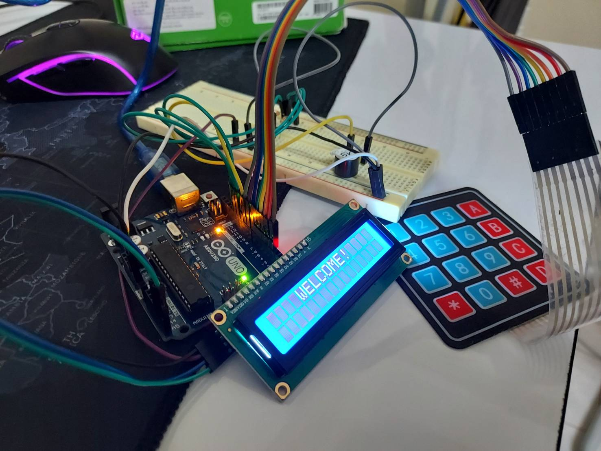

คำอธิบายโครงงาน
โครงงานนี้เป็นโปรเจ็กต์ที่ใช้ microcontroller สำหรับการควบคุมระบบป้องกันด้วยรหัสผ่านโดยใช้ Keypad
และการแสดงผลที่ LCD 16x2 พร้อมกับการให้สัญญาณแสดงผลผ่าน LED และ Buzzer แบบง่ายๆ
ทำให้ผู้ใช้งานสามารถป้อนรหัสผ่านเพื่อทำการปลดล็อคหรือเข้าถึงระบบตามที่ได้ตั้งค่าไว้
ความสำคัญและความน่าสนใจ
1. ความปลอดภัย: โปรเจ็กต์นี้มุ่งเน้นในด้านความปลอดภัยโดยการให้ผู้ใช้ต้องป้อนรหัสผ่านที่ถูกต้องเพื่อที่จะเข้าถึงระบบหรือทรัพยากร
2. ใช้ Microcontroller: การใช้ microcontroller เป็นส่วนสำคัญในโครงงาน เพื่อควบคุมการทำงานของระบบทั้งหมด
3. การใช้งาน Keypad และ LCD: การใช้ Keypad เพื่อรับข้อมูลจากผู้ใช้ และใช้ LCD 16x2 เพื่อแสดงผลข้อความทำให้การใช้งานรู้สึกสะดวกและชัดเจน
4. การให้สัญญาณแสดงผล: การใช้ LED และ Buzzer เพื่อแสดงสถานะของระบบ (เช่น ปิด/เปิดที่ถูกต้องหรือไม่ถูกต้อง) ทำให้ผู้ใช้สามารถรู้สถานะได้ทันที
ข้อจำกัดและความยากลำบาก
1. ความยากในการเพิ่มความปลอดภัย: ระบบนี้ถึงแม้จะมีการใช้รหัสผ่านแต่ยังมีความเสี่ยงที่ผู้ไม่ที่ไม่ได้รับอนุญาตอาจทราบรหัสผ่านจากการดักจับหรือสังเกตการทำงานของระบบ
2. จำกัดในการจัดเก็บรหัสผ่าน: รหัสผ่านที่ใช้งานต้องถูกกำหนดไว้ในโค้ด ซึ่งทำให้ยากต่อการเปลี่ยนแปลงรหัสผ่าน.
3. ไม่มีการบันทึกรายการเข้าถึง: ระบบนี้อาจไม่มีการบันทึกรายการเข้าถึงหรือการใช้งานที่เกิดขึ้น.
4. ไม่มีการเข้ารหัสข้อมูล: ข้อมูลที่ถูกส่งผ่านระบบอาจไม่ได้รับการเข้ารหัสเพิ่มเติมทำให้เป็นไปได้ที่ผู้ไม่ที่ไม่ได้รับอนุญาตจะสามารถดักจับข้อมูลได้